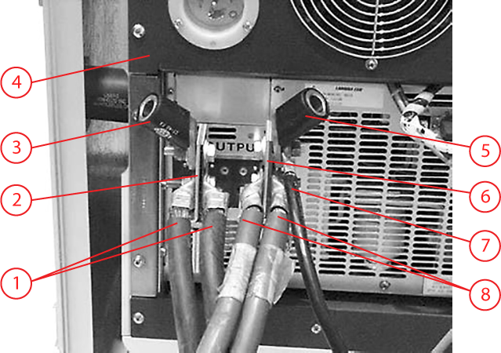
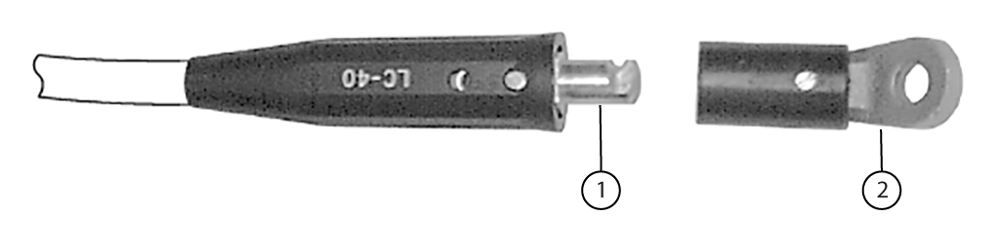
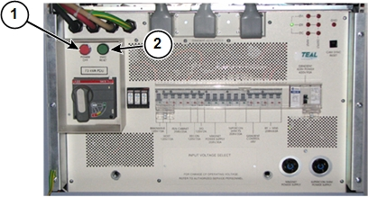
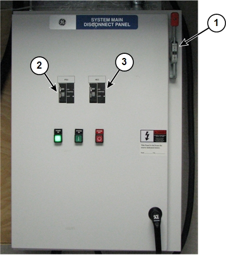
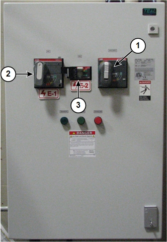
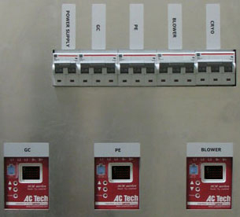

Hooking up the power supply
Common content for hooking up the power supply to ramp a magnet, whether you use a switch heater cable or auxiliary ramp down cable.
Procedure
- Disconnect and LOTO input power to the main coil power supply. Use a digital voltmeter or equivalent measuring device to make sure that no voltage is present.
- Inspect the main coil power cables and make sure they are intact and free of cuts, burns, or other damage. If they are not, order new ones and dispose of or recycle the old ones.
- Make sure the cable lugs and exposed wire from the power cables do not touch the case of the main coil power supply.
- Place the magnet end of the main power cables across the top of the magnet, allowing for 3 ft (1m) of slack.
- Disconnect the female twist connector lugs from the 3 ft (1m) power supply jumper cable and connect the female twist connector lugs to the positive (+) and negative (-) power supply output terminals.
Figure 1. Power supply connectors

1 Negative (-) power cables 2 Negative (-) terminal 3 Female twist connector 4 Power supply 5 Female twist connector 6 Positive (+) terminal 7 Power supply ground cable 8 Positive (+) power cables - Connect one twist connector lug of the power supply jumper cable to the power supply's positive (+) terminal. Make sure the twist connector is fully engaged.
Figure 2. Power supply jumper cable twist connectors

1 Male twist connector 2 Female twist connector with lug - Connect the other twist connector lug of the power supply jumper cable to the power supply's negative (-) terminal. Make sure the twist connector is fully engaged.
- Connect the 0.375 in lug of the 50 ft power supply grounding cable to the power supply's positive (+) terminal.
- Connect the grounding cable's 0.5 in lug to one of the grounding studs on the feet at the back of the magnet.
Figure 3. Magnet grounding lugs
 note: If the magnet's grounding connected to the RF common busbar at the penetration panel, an alternative is to connect the 50-ft power supply grounding cable between the power supply and the PDU ground wire clamp on the RF common busbar. If the magnet is not grounded to the penetration panel, the grounding cable must be connected to the cryostat grounding stud.
note: If the magnet's grounding connected to the RF common busbar at the penetration panel, an alternative is to connect the 50-ft power supply grounding cable between the power supply and the PDU ground wire clamp on the RF common busbar. If the magnet is not grounded to the penetration panel, the grounding cable must be connected to the cryostat grounding stud.
1 MDP Battery Functional Check
Prerequisites
Overview
The Main Disconnect Panel (MDP) has a backup battery that maintains engagement of the internal HEC contact during an AC main power loss or disturbance. This permits immediate transfer of power and resumption of operation of the HEC sub-components when incoming power is restored without requiring manual intervention from a FE or customer. This feature is especially important for minimizing loss of helium from inside the magnet as the cyrocooler compressor operation is resumed immediately upon restoration of incoming power to the HEC. This procedure tests the ability of the backup battery to perform this important function during a power outage.
It is important to perform an orderly shutdown of the HEC variable frequency drives and ICNs in order to avoid accelerated component degradation, or data loss prior to performing this functional check. In this procedure you will be directed on how to properly shut down those components safely before turning off the main input circuit breaker to perform the functional check
Procedure
- Shut down the host PC. See for more information.
Wait until the host and the ICNs have shut down and powered off.
- Power off the Power Distribution Unit (PDU) in the PGR cabinet by pressing the red Power Off button.
Figure 4. PGR Button Locations

- notice
- Shut down the blower and pumps in the Heat Exchanger Cabinet (HEC). Use the keypad on the HEC PLC signal box.
- Turn off the main input circuit breaker on the front of the MDP (item 1 below). Do not push the red "System Off" button. Do not turn off the PDU or HEC circuit breakers (items 2 and 3 below).
Figure 5. Circuit Breakers on GE MDP

Figure 6. Circuit Breakers on Teal MDP

- On the front of the HEC power box, the three variable speed drive LED displays should be dark, indicating that the units are powered off.
Figure 7. HEC Variable Speed Drive Displays

- Wait 5 minutes.
Waiting 5 minutes is critical because this time is used to demonstrate that the backup battery is able to keep the HEC contact energized during a power loss event so that power is immediately transferred to the HEC when incoming power is restored.
- Turn the MDP main input circuit breaker back on (item 1 in Figure 5). Do not push the red System On button.
- Verify the auto-restart feature of the MDP is working by observing the HEC. The variable speed drive displays (Figure 7) should turn back on after you turn on the MDP main breaker. (The PDU will not turn on at this point because it is tripped.)
If the variable speed drive displays turn on, the auto-restart feature of the MDP has worked and the MDP battery is in good condition. Proceed to the next step.
If the variable speed drive displays do not turn on, the auto-restart feature of the MDP did not work and the MDP battery requires replacement. In this case, press the System On button on the MDP to restore power to the HEC. Turn the MDP PDU circuit breaker back on to restore power to the PGR PDU. Until the backup battery is replaced and after any future power outages, it will be necessary to manually restore power to the HEC by pressing the System On button and then turning on the MDP PDU circuit breaker. See Finalization.
- The MDP PDU under voltage circuit breaker tripped when the main input circuit breaker was turned off. Turn the MDP PDU circuit breaker back on.
- If necessary, reset and turn on the PDU switch.
- On the PDU, press the green EMO Reset button (Figure 4).
- Restart the system. See .
 |
If the MDP is not supplied by GE Healthcare, see the manual for the MDP for information about how to shut off its main breaker.
Finalization
If the MDP is under GE contract, schedule time to replace the battery. See the vendor manual for the MDP for information about replacing the backup battery. Otherwise, inform the site that they must have it replaced.